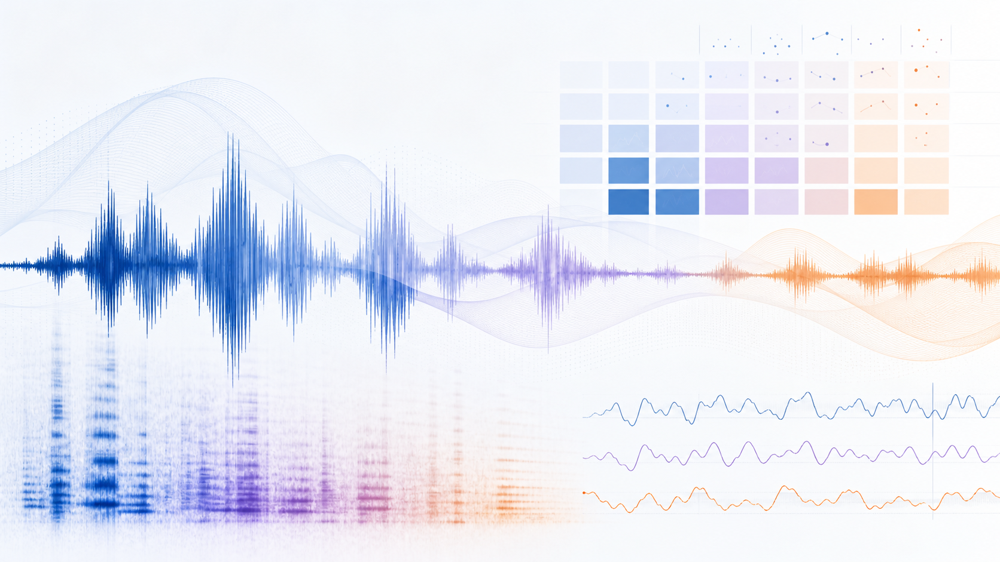

audio_path
Path to the benchmark input audio for this prompt.
SPEARBench
SPEAR Benchmark evaluates spoken dialogue models across latency, intelligibility, naturalness, interruptions, language and dialect behavior, stance, and explainable speech features.

Current results copied from benchmark.csv for seamless_2t_2s_questions.
| Speech Quality | Interruptions | Language and Dialect | Turn-Taking | Emotions | Stances | Explainable Features | Report | ||||||||||||||||||
|---|---|---|---|---|---|---|---|---|---|---|---|---|---|---|---|---|---|---|---|---|---|---|---|---|---|
| Model | Inference mode | Open weights | UTMOS | WER % | CER % | Latency | Interr. time | Interr. % | English answers | Same dialect | NA dialect | Dialectal entrain. | Dialectal variance | Turn-taking naturalness | Emotional naturalness | Arousal corr. | Valence corr. | Dominance corr. | Same stance | More negative | More positive | Answer duration | Voiced ratio | Pitch variation | |
| Human | Human | - | 2.222 | 27.1 | 17.2 | 742 ms | 521 ms | 33.8 | 99.3 | 74.1 | 76.6 | 0.528 | 250.6 | -4.989 | 11.096 | 0.525 | 0.356 | 0.511 | 97.1 | 1.7 | 1.5 | 8.8 | 0.500 | 0.321 | Detailed report |
| Gemini-2.5-flash-native-audio | Full-duplex | - | 3.721 | 7.9 | 2.6 | 2137 ms | 0 ms | 0.0 | 99.7 | 73.5 | 95.9 | 0.506 | 126.4 | -5.312 | 10.615 | 0.186 | 0.267 | 0.154 | 97.1 | 1.5 | 1.6 | 6.6 | 0.514 | 0.161 | Detailed report |
| Gemini-3.1-flash-live | Full-duplex | - | 4.115 | 26.7 | 23.1 | 1154 ms | 0 ms | 0.0 | 99.7 | 74.6 | 97.1 | 0.544 | 178.0 | -5.348 | 10.163 | 0.249 | 0.295 | 0.199 | 97.6 | 1.9 | 0.4 | 10.6 | 0.568 | 0.299 | No report |
| GPT-audio-1.5 | Non-streaming | - | 4.362 | 5.8 | 1.4 | 959 ms | - | - | 100.0 | 74.6 | 97.4 | 0.457 | 104.2 | -4.741 | 10.908 | 0.113 | 0.288 | 0.092 | 98.0 | 0.8 | 1.2 | 9.8 | 0.548 | 0.118 | Detailed report |
| GPT-realtime-2 | Full-duplex | - | 4.275 | 14.9 | 5.8 | 2182 ms | 431 ms | 23.6 | 100.0 | 75.1 | 98.0 | 0.407 | 90.0 | -5.329 | 10.893 | 0.060 | 0.208 | 0.081 | 97.5 | 1.8 | 0.6 | 19.3 | 0.508 | 0.164 | Detailed report |
| Mini-omni (0.5B) | Half-duplex | ✓ | 3.923 | 6.7 | 4.8 | 74 ms | - | - | 100.0 | 65.8 | 84.7 | 0.407 | 138.5 | -3.104 | 9.215 | -0.016 | 0.197 | -0.021 | 95.7 | 4.2 | 0.2 | 11.4 | 0.592 | 0.128 | Detailed report |
| Qwen2.5-Omni-7B (7B) | Half-duplex | ✓ | 4.192 | 19.4 | 7.5 | 1176 ms | - | - | 98.9 | 52.1 | 65.6 | 0.285 | 84.5 | -5.228 | 10.195 | -0.023 | -0.026 | -0.027 | 97.3 | 1.9 | 0.9 | 7.3 | 0.384 | 0.176 | Detailed report |
| Qwen3-Omni-30B-Instruct (30B) | Full-duplex | ✓ | 4.338 | 7.9 | 3.3 | 2724 ms | 0 ms | 0.0 | 98.1 | 69.5 | 89.6 | 0.477 | 204.5 | -5.339 | 10.906 | 0.075 | 0.288 | 0.063 | 97.2 | 1.9 | 1.2 | 8.6 | 0.671 | 0.219 | Detailed report |
6 models shown.
Evaluate your speech agent on the SPEAR Benchmark splits, then send us the generated audio and metadata needed to reproduce the scoring pipeline.
Download the dev and test data package, then keep the folder structure intact when you run inference.
Download data
Use the helper code in
inference_help_code.
The included README explains the environment, data layout, and submission steps. With the right configuration, running bash run_LLM_inference.sh should generate outputs for your model. The main customization is adding an adapted proxy at bin/llm_proxies/my_model_name.py so the helper can call your model consistently. Once processed, the outputs should be in data/seamless_2t_2s_questions/outputs/my_model_name.
Send the generated response audios and a metadata CSV using the same structure as the input metadata. A small example is included here: metadata-example.csv.
audio_pathPath to the benchmark input audio for this prompt.
answer_audio_pathPath to your model's generated answer audio for the same prompt.
context_end_timeTimestamp where the dialogue context ends in the input audio.
question_end_timeTimestamp where the user question ends.
answer_durationDuration of your model's generated answer audio.
speakersSpeaker identifiers for the source conversation.
conversation_idIdentifier linking examples from the same conversation.
transcript_questionTranscript of the dialogue context and user question.
transcript_answerTranscript of your model's response, when available.
answer_start_timeStart time of the answer relative to the question boundary.
Core resources and evaluation components used around SPEARBench.
For questions about the benchmark, evaluated models, submission format, code, datasets, or collaboration ideas, please write to tthebau1@jhu.edu. We are happy to help with reproducing scores, adding new systems, and clarifying how SPEARBench should be used.